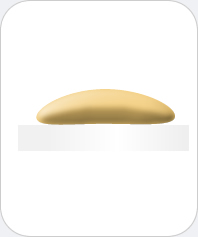

|  |
Soap
Chemicals you may find: Glycerol Oleic acid Linoleic acid Stearic acid EDTA Citric acid Calcite |
|
Soaps and other detergents are used together with water to remove dirt and oil. The can be liquid or powders or molded in to bars. Soaps are commonly consisting of sodium or potassium salts of fatty (long-chain) acids such as oleic, linoleic, stearic and other acids. Additional ingredients may be added for color, fragrance, appearance or other specifically desired properties. For example, almond peals or pumice is added to exfoliating soaps.
In industrially produced soaps, typically fats and oils including glycerin are removed. Handmade soaps contain excess fat and are therefore more skin-friendly. |
|